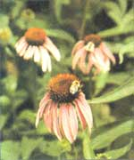
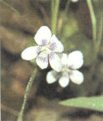
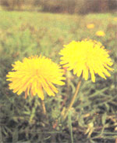

The wind carries both warm and cool breezes as the spring sun begins to brighten. The ground is sodden in the fields, and wild strawberries and violets grow in resplendent bloom along the roadside. Down in the woods, the pussy willows are out and salamanders slip across paths to lay their eggs. And as we celebrate this gentle explosion of nature, this cause for joyful celebration, we suddenly remember-with itchy throats and runny noses-that pollen is back.
After a childhood of hay fever attacks so severe that my jaw often ached from sneezing, I have learned to use Earth's medicinal plants to heal my allergic symptoms instead of aggravate them. I have found that some herbs help stabilize the immune system, some act as astringents to reduce inflammation of mucous membranes, and some stabilize the cells that produce and release histamines (the chemical culprit that causes redness, swelling, and increased mucous production). Other herbs act on metabolism to make the body less susceptible to allergies, and some support the lymphatic system, helping to rid the body of toxins. Along with lifestyle and dietary changes, it is often possible to reduce allergic symptoms, if not eliminate them altogether. You will also be able to breathe easier and happier as you wave goodbye to all those expensive pharmaceutical antihistamines.
Herbs for Allergies
Several of the herbs listed below can be found right outside your front door or can be easily cultivated in a garden or landscape. A few of them are becoming less abundant due to over- harvesting, however, so if you wish to use one of the more at-risk herbs, try to obtain seed and then find out the appropriate cultivation requirements. This will ensure that the Earth can continue to flourish and provide for our health needs on a continuing basis.
Echinacea ( Echinacea Purpurea or Angustifoliaor Pallida, use separately or in combination. ): Known commonly as purple coneflower, the root-and to a lesser degree, the leaves, flowers, and seed heads-of Echinacea species promote health by boosting and balancing the immune system. Echinacea stimulates the lymphatic system, promoting drainage and elimination of toxins, and helps to prevent and fight potential infections. This plant is a hardy perennial with beautiful daisy-like magenta blooms. It can be found in the wild in several midwestern states such as Texas, Oklahoma, and Arkansas, and can be easily grown in home flower beds, where it will bloom summer through fall.
Dosage: Take in tincture form (five to 30 drops, four to six times daily) or buy freeze-dried tablets from a health food store. This plant is not particularly water soluble, and therfore unsuitable for tea.
Eyebright ( Euphrasia officinalis ): The aerial parts (any part of the plant above ground) of this tiny plant are both astringent and anti-inflammatory, and decrease the hypersensitive response of the mucous membranes in the eyes, nose, throat, and ears. In other words, this herb is the perfect remedy for hay fever sufferers. Eyebright is not readily propagated, however, since it grows symbiotically from the roots of grasses. While it grows wild in some eastern and northeastern states, including Maine, New Hampshire, Massachusetts, and New York, you can purchase preparations of eye-bright in most herb or health food stores.
Dosage: Take as tea (one teaspoon of dried plant per one cup of boiling water, taken four to six times daily) or in tincture form (approximately 30 drops, four to six times daily).
Making a Fresh Plant Tincture
A tincture is a concentrated form of herbal medicine in which some liquid, other than water, has been used to extract the medicinal properties. The resulting tincture will be stronger than a tea, so one need only take drops of it at a time. Cider vinegar and some types of drinking alcohol are two commonly used tincture mediums. The drinking alcohol may be grain alcohol, which is 190 proof and has the greatest potential for extraction, or you can use high-proof vodka (110 proof). Other drinking alcohol may be used, such as brandy, but they are less potent and have less potential to extract the non-water soluble properties. If cider vinegar is used, the resultant tincture will be weaker than an alcohol-based preparation, and dosages may be doubled.
To make a fresh-plant tincture, harvest the herb and clean it, scrubbing the roots or rinsing other plant material if necessary. Cut the plant parts into small pieces and pack the cut herb into a glass jar with a screw-top lid. Pour the tincture medium over the fresh herb just to cover the plant parts. If the herb rises in the liquid, you may place a clean stone on the plant to keep it immersed. Pour about ¼" inch more liquid in than you have herb. Then, close the jar tightly, and set it away in a dark place, such as a cupboard, for two weeks. Occasionally, check the jar and swish the liquid around gently to allow for good exposure of all plant parts to the tincture medium. At the end of two weeks, pour off the liquid and strain it through coffee filters or several layers of cheesecloth. This liquid is now your tincture. Pour it into a clean jar, and label the contents with the name of the herb, the medium used, and the date. Tincture prepared in alcohol will last almost indefinitely. Tinctures in cider vinegar will be stable for about two to three years.
Golden Seal ( Hydrastis canadensis ): The bitter, yellow root of this wildflower has antibiotic properties and is useful in preventing secondary infection in hay fever, sinusitis, or chest congestion. It is also anti-inflammatory to the mucous membranes, and helps reduce and soothe swollen, irritated tissues. Therefore golden seal is helpful in all types of airborne allergy responses. It grows wild in southern and midwestern states such as Indiana, Missouri, and the Ozarks and also in the Northeast as far north as Vermont. However, due to its tremendous popularity, several states protect golden seal from extinction with laws restricting or forbidding picking. You can grow this herb in rich, loose soil, but this woodland plant does take patience and special attention. For instance, you will have to trellis the plant and keep it away from intense and direct sunlight. It is probably best purchased from organic growers. ( Caution: Golden Seal may stimulate mild uterine contractions, so it unsafe to ingest during pregnancy.)
Dosage: Take as tincture (30 drops, four to six times daily,) or as tea (use one tea-spoon per one cup water; and be warned that it tastes extremely bitter).
Mullein ( Verbascum thapsus ): The fuzzy leaves of this common biennial weed are expectorant, decongestant, and mildly sedative to respiratory mucous membranes. Mullein calms inflamed lung tissue and enhances moistening of the tiny air sacs in the lungs. Therefore it is especially helpful for bronchitis sufferers and those who have long term allergy-induced asthma. Mullein is a common roadside weed throughout the entire country. In some European countries, this tall herb forms, the centerpiece of herb gardens.
Dosage: Take as tea (one tablespoon dried herb per one cup boiling water, four to six times daily), or tincture (30 to 60 drops, four to six times daily).
Mormon Tea ( Ephedra viridis ): The small twigs and branches of this southwestern desert plant act as a decongestant and help shrink swollen mucous mem-branes. Mormon tea also alleviates or reduces symptoms of hay fever and other related allergies. The plant can be found in arid or semi-arid areas, such as Texas and New Mexico.
Dosage: Take as tea (one tablespoon per one cup of water), or tincture (30 drops, four to six times daily).
Violet ( Viola odorata ): The leaves and blossoms of this common plant are both an expectorant and decongestant, and soothe irritated mucous membranes of the lungs. Violets also act as a lymphatic-system stimulant, helping to relieve buildup of toxins in the body. These properties make it useful for chronic allergic asthma and bronchitis. This violet can be harvested in the wild or purchased from a local plant nursery and transplanted into flower beds where it will flourish.
Dosage: Take as tea (one tablespoon per one cup water, four to six times daily) or take in tincture form (30 to 60 drops, four to six times daily).
Thyme ( Thymus vulgaris ): The leaves and blossoms of this common culinary herb are both anti-bacterial and expectorant. Therefore thyme is the perfect herb for alleviating coughs due to asthma and bronchitis. Thyme can be planted in vegetable or flower gardens, where it will maintain a low growth and produce beautiful, fragrant leaves and blossoms.
Dosage: Take as tea or broth (one to two tablespoons of herb per one cup of water or broth).
Stinging Nettles ( Urtica dioica ): The aerial parts of this weed help stabilize the mast cells that line the mucous membranes, and they literally burst to release histamines when encountering an allergen. This makes nettles an excellent stabilizing herb to use for prevention or to reduce symptoms in any allergic response, including hay fever, sinusitis, and asthma. This natural antihistamine is a noxious weed in some places (due its stinging hairs), and can often be found in moist, fertile soil throughout the country. The seed can also be planted in the perennial garden, but should be kept well away from other plants because its growth can become rampant.
Dosage: Take as a fresh-plant tincture (30 drops, four to six times daily).
Yerba Santa ( Eriodiction califormicum ): The leaves of this western shrub help liquify mucous in the lungs, facilitate expectoration, and prevent infection. Yerba santa also aids in upper respiratory tissue repair and slows down the production of excess mucus. It is specifically indicated in asthma, bronchitis, and coughs when there is copious mucuos. Yerba santa prefers a light, gravelly, well-drained soil. It is located primarily in western states such as California and Colorado.
Dosage: Take as a tincture (10 to 30 drops, four to six times daily).
Osha ( Ligusticum porteri ): The root of this high-country plant stimulates resistance to viral infections and reduces respiratory-tissue membrane inflammation. It helps prevent infection, making it useful for allergic bronchitis, asthma, and other types of allergic coughs. Osha is presently being over-harvested, and cultivation on a large scale is usually unsuccessful thus far. Osha preparations can be obtained from herb or health food stores.
Dosage: Take as a tincture (20 to 60 drops, four to six times daily).
Coltsfoot ( Tussilago farfara ): The leaves of this low-growing perennial act as a bronchial decongestant and expectorant, and also help stabilize mast cells of the respiratory tract and reduce lung-tissue inflammation. This makes it a useful remedy for allergy-induced asthma. Coltsfoot is found throughout the country and can be planted in a shaded, moist spot where it tends to grow rapidly. ( Caution: Coltsfoot should not be taken during pregnancy. Whether or not the herb has negative effects for pregnant women is in question and being researched at this time.)
Dosage: Take as tea (combine one tablespoon per one cup water, four to six times daily) or tincture (30 drops, four to six times daily).
Dandelion ( Taraxacum officinalis ): The root of this common weed boosts liver function gently and stimulates the organ to break down inflammatory compounds, such as histamines, which are released in response to allergen exposure. This takes them out of circulation in the bloodstream, where they might continue to trigger allergic reactions. Dandelion root can be used along with other herbs to help reduce seasonal allergic responses. This notorious plant is commonly found in lawns, fields, and waste places throughout much of the country.
Dosage: Take as tincture (30 to 60 drops, four times daily), or tea (one table-spoon root per one cup of water; this tea is also bitter tasting).
Horseradish ( Cochlearia amoracia ): The root of this culinary herb is quite stimulating and can be used to break up sinus and chest congestion. To reduce the bitter taste, grate the root and cover it with an equal amount of honey; set it aside to "steep" for a few weeks, and take when needed. Horseradish is easy to grow in moderately rich, loose soil, and likes partial shade to full sun.
Dosage: Make a mixture of grated root and honey (take one teaspoon, four times daily as needed).
Elecampane ( Inula helenium ): The root of this robust wildflower is expectorant and decongestant, anti-spasmodic, and anti-bacterial, and is useful for mucuosy coughs of asthma and bronchitis. Elecampane is found in the wild in Northeastern states, such as Maine and New Hampshire, and can be cultivated in a flower or herb garden where it takes a prominent place due to its size.
Dosage: Take as tea (one tablespoon root per one cup water, four times daily) or tincture (30 drops, four times daily).
Favorite Remedies
None of these 14 medicinal plants have particular toxicities, other than those which have been discouraged during pregnancy. Several of the herbs can be taken together in order to relieve the symptoms in your own particular allergic reaction. In putting together a formula for yourself, it is not necessary to include every herb with potential benefit for your condition. Choose a few herbs that are appropriate for your symptoms. If some are locally available or are plants that you can grow yourself or purchase readily from a local store, use those. However, if one of the more "exotic" herbs sounds perfectly suited to your needs, try ordering it from an herb or health food store.
One of my favorite remedies for hay fever is a mixture of tinctures of echinacea, golden seal, eyebright, stinging nettles, and siberian ginseng. People I've offered it to swear by it and call every allergy season for more. One asthma tea mix that I frequently make contains mullein leaves, echinacea root, violets, coltsfoot leaves, and yerba santa leaves. If taken over a long period of time, the herb will help tone lung tissues and get rid of excess mucuos.
The herbs above can be taken as teas or you may extract the medicinal compounds from drinking alcohol and/or cider vinegar to create a concentrated tincture form. (See "Making a Fresh Plant Tincture" on page 58.) If you're using herbs for the first time or are sensitive to many substances, it is best to start with one herb at a time in very small amounts, and begin using the herbs under the direction of a health care practitioner.
Also, herbs often work in different, less dramatic ways than prescription or over-the-counter pharmaceuticals. It may take a day or two for the herb(s) to take effect. If you know when your allergy season starts, you may want to take the herb(s) a week or so beforehand.
If you have difficulty finding the plants themselves, you might consider buying the herb, already extracted or prepared, through a local herb or health food store. Remember, too, to take it easy. Be gentler with yourself when allergies strike.
Most important, make friends with the planet and your environment. Letting plants help you to return to balance can be a step in the direction of a sustainable and joyful celebration of life on earth.
General Health Recommendations
Allergic reactions and symptoms are less likely to become severe if general health is good. An already at-risk immune system, taxed with other chronic diseases or burdened with many stresses, is more likely to overreact. Following general guidelines of getting enough rest and exercise can be a good start to healthy maintenance.
Stress places a heavy burden on the immune system. Fewer lymphocytes (white blood cells that recognize and destroy bacteria and other foreign particles) are produced when the body is under stress. This can lead to greater susceptibility to colds, flu, and viruses. Allergic reactions are more likely to be triggered if the body is overworked or over-stressed. Physical stress, such as long periods of hard labor or extreme weather changes, as well as emotional stress (for example, a poor relationship) should be taken into account and dealt with as best as possible.
Environmental factors should also be taken into account. If the place you live cannot be changed, change your own personal environment, such as reducing household toxins by switching to non-toxic cleaning products. Also, some people react to animal dander and hair, and the pros and cons of keeping pets indoors might be considered if chronic allergies to airborne substances occur.
Disclaimer: The information contained herein is in no way to be considered as a substitute for your own inner guidance or consultation with a duly licensed health-care professional.
Editor's Note: Corinne Martin, a graduate of the Institute of Traditional Herbal Medicine in Santa Fe, NM, is a certified clinical herbalist who has studied plants for over a decade.
|
 |
 |
 |